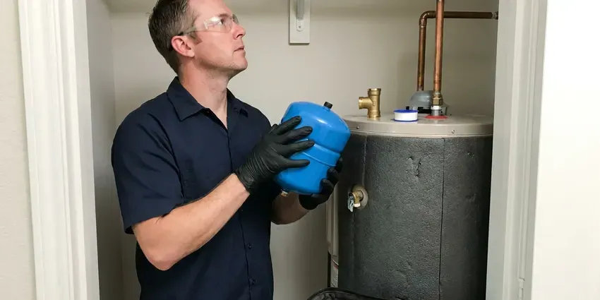

Water Heater Installation in Milwaukee, WI
Getting a new water heater is a big decision for your Milwaukee, WI home. HKV Plumbing offers skilled installation, making sure your system is set up correctly and safely.
- Same-Day Water Heater Installs
- Trusted Brands
- Clear Pricing
- Upfront Pricing

Schedule Your Water Heater Installation in Milwaukee, WI.
Call (414) 432-4641 and we will suggest the right size and fuel type for your home.
Your Trusted Source for Water Heater Installation in Milwaukee, WI
HKV Plumbing sizes every water heater based on household needs, fuel type and available space. We install new connectors, relief lines, venting and expansion tanks where needed, then haul away the old unit.
Our expertise includes:
- Expansion tanks, drain pans and code-compliant relief lines
- Code compliant venting and expansion tank installations.
- Code-approved venting and piping for all units.

Additional Plumbing Installation Services in Milwaukee, WI
We install water heaters, pumps, lines, and fixtures across Milwaukee, WI with precision workmanship that meets every local code.


Customers
Why Choose HKV Plumbing for Water Heater Installation in Milwaukee, WI?
We help you choose the right size and type for your home. Then we install it cleanly and test it before we leave.
- Local Expertise, We understand the local plumbing challenges and water conditions in Wisconsin, providing custom solutions for your home.
- Quality Assurance, We only install well-built water heater brands known for their durability and energy efficiency, ensuring long-lasting performance.
- Fast Service, Many installations are finished the same day you call.
Citywide Coverage
We install water heaters in single-family homes, townhomes and condos throughout Milwaukee. Whether your heater sits in a garage, closet or attic, we have the tools to handle it.
Experienced Team
Each plumber at HKV Plumbing is well trained in the details of water heater installation, understanding factors like water pressure, venting requirements and fuel sources. Their experience means your new water heater will perform well for its lifespan.
Safety-First Approach
Safety is paramount in every water heater installation we perform. We rigorously adhere to all local Wisconsin plumbing and electrical codes, ensuring proper venting, gas line connections and pressure relief valve installations to prevent hazards.
Trusted Certified Milwaukee Plumbing Services Professionals
At HKV Plumbing, we take pride in providing licensed, certified plumbing services throughout Milwaukee, WI. Backed by leading industry credentials, our experienced plumbers combine technical skill with genuine customer care. Whether it is repair, installation, or maintenance, we follow strict safety and quality standards to deliver long-lasting results you can trust.
Call Us Now PHCC Plumbing Contractor Recognition
PHCC Plumbing Contractor Recognition Better Business Bureau (BBB) Accreditation
Better Business Bureau (BBB) Accreditation Angi Certified Pro
Angi Certified Pro ISO 9001 Quality Management Certification
ISO 9001 Quality Management CertificationDependable Water Heater Installation Services in Milwaukee, WI
Traditional Tank Water Heater Installation in Milwaukee
Most homes still rely on traditional tank water heaters for their hot water needs. These units store and heat a large volume of water, making them a dependable choice for families. Our installation service includes proper sizing based on your household's demand, providing adequate hot water even during peak usage. We handle all connections, including gas lines or electrical wiring, and ensure correct venting to meet Milwaukee safety codes. Our team also disposes of your old unit responsibly, making the process hassle-free for you.

Tankless Water Heater Installation in Milwaukee, WI
Tankless water heaters provide on-demand hot water, saving energy and space, and they are more and more popular in Wisconsin homes. Our plumbers specialize in installing these efficient units, ensuring proper gas line sizing or electrical service upgrades if needed. We also address venting requirements, which are often different from traditional units. While the upfront cost can be higher, the long-term energy savings and endless hot water supply make them an attractive option for many homeowners in Milwaukee. We'll help you choose the right model for your particular needs.
Brand-Specific Water Heater Installation in Milwaukee
We are experienced in installing all major water heater brands, including Rheem, AO Smith, Bradford White and Navien. Our plumbers are familiar with the specific installation requirements and warranty terms for each manufacturer, ensuring your new unit is set up precisely to factory specifications for optimal performance and longevity in your Milwaukee home.
Major Brand Water Heater Installation in Milwaukee, WI
HKV Plumbing is experienced in installing all major water heater brands, including Rheem, Bradford White, A.O. Smith and Noritz, for residents across Milwaukee, WI. Each brand offers different features, efficiencies and warranty options. Our plumbers are knowledgeable about the installation requirements for each manufacturer, ensuring your warranty remains valid and the unit performs as designed. We can help you navigate the options and choose a trusted brand that aligns with your budget and hot water needs, providing expert installation regardless of the model.
Expansion Tank Installation in Milwaukee, WI
Many homes have a pressure reducing valve or check valve that creates a closed system. When water heats and expands, pressure can rise and stress pipes and relief valves. An expansion tank absorbs that extra pressure. We install and pre-charge the tank to match your water pressure. This protects your new water heater and plumbing.
Water Heater Installation Cost in Milwaukee, WI
Tank water heater installations generally cost less upfront than tankless systems. Gas tankless installs can cost more because of gas line upgrades and venting. Attic installs, relocations and code upgrades may add to the price. We provide a written quote that includes the unit, labor, permits and haul-away. We also compare long-term energy costs so you can make an educated choice.
Emergency Water Heater Replacement in Milwaukee, WI
A sudden water heater failure can be a major inconvenience, particularly since hot water is essential year-round. If your water heater bursts, leaks significantly or completely stops working, HKV Plumbing offers emergency replacement services in Milwaukee. We prioritize urgent installations to restore your hot water quickly and efficiently. Our plumbers arrive with the necessary tools and common replacement units, or we can source specific models fast. We aim to minimize damage and get your home back to normal with minimal delay, even if it's after hours.

Gas Water Heater Installation in Milwaukee, WI
Gas water heaters are a popular choice in Milwaukee due to their efficiency and faster recovery rates. Our licensed plumbers meticulously install gas lines, ensure secure connections and verify proper ventilation to prevent carbon monoxide buildup. We also install required expansion tanks and check for gas leaks, closely following all local safety codes.
Water Heater Installation Near Me in Milwaukee, WI
When you search for "water heater installation near me" in Milwaukee, WI, HKV Plumbing is your trusted local expert. We are very familiar with the plumbing and water conditions in the area. Our proximity allows us to provide rapid response times and personalized service to all our neighbors.
Our team understands the water conditions and home layouts in the area. We recommend units that hold up to local water and where they will be installed. You get a professional installation and clear advice on maintenance.
HKV Plumbing at a Glance
- Licensed and insured plumbers serving Milwaukee, WI
- Same-day appointments and 24/7 emergency response
- Upfront, flat-rate pricing before work begins
- 4.8-star rated by 448+ Wisconsin customers
Milwaukee Map
Milwaukee Information
- Population
- 561,385
- Area codes
- 414/262/920
- Service area
- Milwaukee and communities within 40 miles
- Nearby
- Wauwatosa, West Allis, Waukesha, Racine
Having a properly installed water heater is crucial for homes in Milwaukee, WI, where families need reliable hot water year-round for comfort and sanitation.
Expert Services
Trust our professionals for reliable HKV Plumbing solutions in Milwaukee, WI.
Our Specialized Plumbing Services in Milwaukee, WI
At HKV Plumbing, we provide a complete range of plumbing services across Milwaukee, WI. From leak detection to full system installations, our team ensures fast, precise, and affordable service for both residential and commercial properties. Explore our core services below:


How Our Water Heater Installation Process Works in Milwaukee, WI
Our water heater installation process is fast, safe and designed to restore hot water fast.
Request a Quote
Contact HKV Plumbing by calling (414) 432-4641 or filling out our online form to discuss your water heater needs. We will schedule a convenient time for a plumber to assess your current system and provide an honest, upfront quote for a new installation.
Expert Assessment
Our licensed plumber will visit your Milwaukee home to evaluate your hot water usage, existing plumbing and space requirements. They will recommend the best type and size of water heater for your particular situation and answer any questions you may have.
Professional Installation
Once you approve the quote, our team will move ahead with the installation of your new water heater. We handle everything from safely disconnecting and removing your old unit to installing the new one, making all necessary connections and confirming proper venting and code compliance.
Frequently Asked Questions About Water Heater Installation in Milwaukee
The cost of water heater installation in Milwaukee, WI usually ranges from $1,200 to $3,500, depending on the type of water heater (tank vs. tankless), its capacity, fuel type (gas or electric) and any needed plumbing or electrical modifications. We provide a written, upfront quote after assessing your particular needs.
The decision to repair or replace often depends on the age of your unit, the cost of the repair and its energy efficiency. If your water heater is over 10 years old, often breaks down, or the repair cost is more than 50% of a new unit, replacement is often the more economical choice. Newer models also offer much better energy efficiency.
Most standard water heater installations, particularly for replacing a similar tank unit, can be completed within 3 to 4 hours. However, a conversion from a tank to a tankless system, or installations requiring significant plumbing or electrical modifications, might take a full day or longer. We will provide an estimated timeline during our first assessment.
In most areas, a plumbing permit is required for water heater replacement or installation to confirm the work meets local building and safety codes. Wisconsin writes its own state plumbing code rather than adopting a national model code directly, and the state licenses plumbers. HKV Plumbing handles all necessary permit applications and inspections in Milwaukee as part of our service.
Most households of two to four people do well with a 40 or 50 gallon tank. Larger families may need a 75 gallon tank or a tankless unit sized by flow rate.
The correct size water heater depends on the number of people in your household and your peak hot water demand. For tank units, a 40 to 50 gallon tank is common for 2 to 4 people, while larger families might need 60 to 80 gallons. For tankless units, it is about flow rate (GPM) and temperature rise. Our plumbers will assess your needs to recommend the ideal size.
Many jurisdictions require a permit for water heater replacement. We pull permits when required and make sure the install meets code.
Many tank water heaters last 8 to 12 years, though hard water can shorten that. Regular flushing and anode rod checks help lengthen life.
What People Are Saying About Our Plumbing Experts?

Emily R.
I called HKV Plumbing for plumbing repair, and the technician was fast, polite, and thorough. They explained the problem clearly and fixed it the same day. I will definitely hire them again. Highly recommended!
Plumbing Repair · Milwaukee, WI
Robert G.
The trenchless sewer replacement saved our front yard. They walked us through the camera inspection footage first so we knew exactly what we were paying for.
Sewer Line Replacement · Kenosha, WI
Patricia H.
We had a slab leak that two other companies could not find. HKV Plumbing located it in under an hour, explained our options, and the price matched the quote to the dollar.
Slab Leak Repair · Kenosha, WI
Mark T.
When our office needed drain cleaning, HKV Plumbing provided quick, reliable service. The plumber arrived on time and made sure every drain flowed perfectly before leaving. Very satisfied.
Drain Cleaning · Sheboygan, WI
Daniel K.
A pipe burst at 11 pm and they actually answered. The plumber showed up within the hour, shut everything down, and had us back to normal the next morning. Could not ask for more.
Emergency Plumbing · Wauwatosa, WI
Laura S.
I scheduled a water heater replacement, and the team made the process smooth and affordable. The new unit works perfectly, and they cleaned up after completing the job.
Water Heater Replacement · Wauwatosa, WI